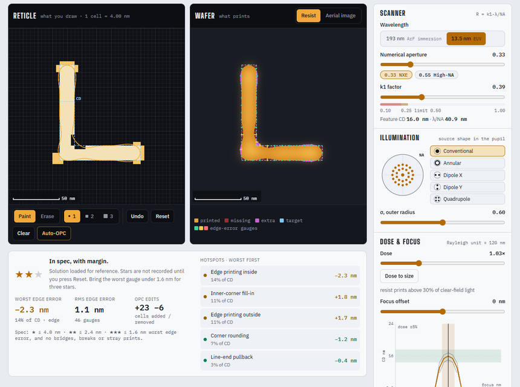
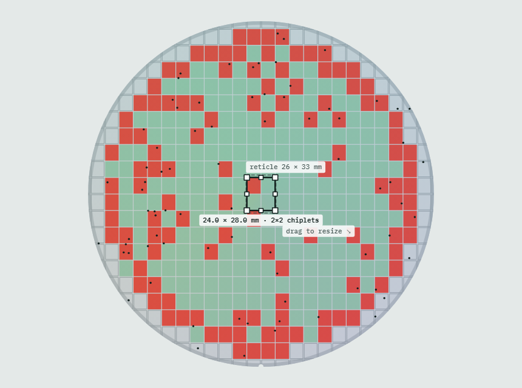
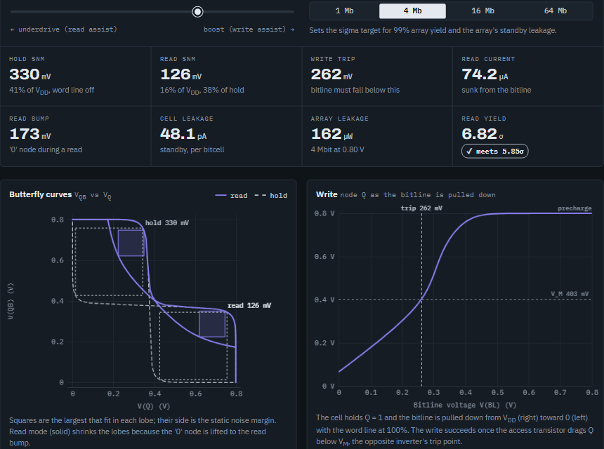
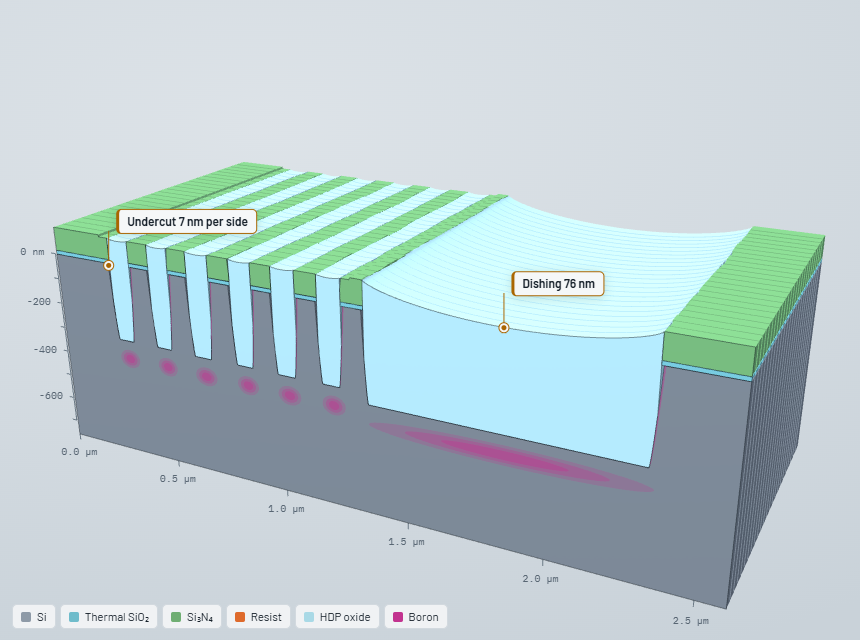
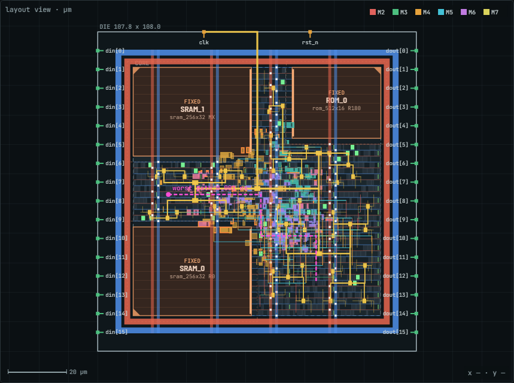
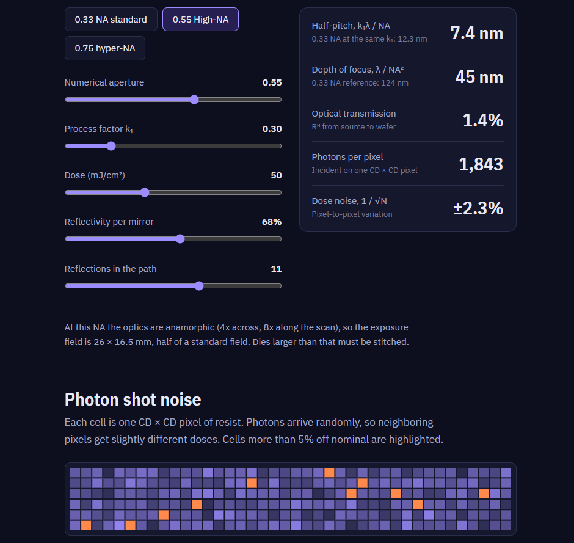

Vijay
Notes on semiconductor processing, lithography, and the physics behind chipmaking, with interactive models where they help.
Posts

October 5, 2026
Light Painter
Paint a photomask on a 64 × 64 grid and watch the resist contour print through a partially coherent EUV or ArF imaging model. Six optical proximity correction puzzles, plus a sandbox with a Bossung plot and depth-of-focus readout.

October 5, 2026
Chiplet Slicer
Drag a die on a 300 mm wafer and slice it into chiplets to see yield, die-to-die overhead and packaging cost trade off. Then inject an edge ring, scratch, cluster or reticle repeater and read the wafer like a yield engineer.

October 3, 2026
Multi-Vt Cell Explorer
Sweep temperature, supply, process corner, body bias and gate length across ULVT, LVT, SVT and HVT transistors and the SRAM bitcell built from them, and watch threshold, leakage, delay and stability trade against each other.

October 1, 2026
STI Wafer Run
Run a 300 mm wafer through oxidation, lithography, etch, implant and CMP, and watch the 3D cross-section build. Bad settings show real failure modes, and your score is the cost per good die.

September 30, 2026
PnR Command Lab
Type Innovus-style TCL commands and watch a gate-level Verilog netlist become a placed, clocked and routed layout. An interactive place-and-route simulator, from floorplan to GDS.

September 23, 2026
Inside a High-NA EUV scanner
How light travels from a tin plasma to the wafer, why the industry raised NA from 0.33 to 0.55, and what that costs in focus and photons. Includes an interactive simulator of the Rayleigh equations and photon shot noise.